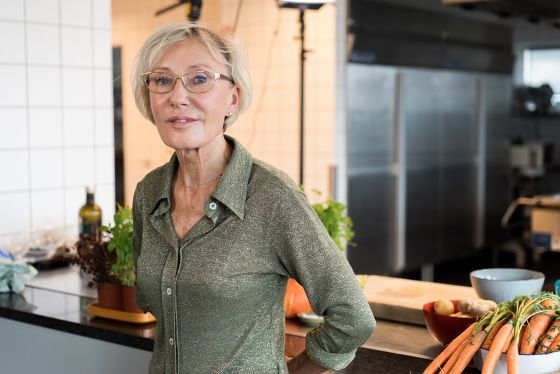

Om Mig
Jeg er klinisk diætist og specialist i IBS og Low FODMAP diet til irritabel tarm, men også i ernæring til de andre sygdomme der kan ramme mavetarmkanalen. Jeg er ansat på Aarhus Universitetshospital på en afdeling med speciale i sygdomme i mavetarm kanalen og beskæftiger mig kun med mavetarmkanalen, hvilket er en stor styrke når jeg taler med mine patienter. Arbejdet med patienter er en udfordring og giver mange dejlige og positive oplevelser – selvom mange af de mennesker jeg taler med kan være alvorligt syge og bekymrede over deres situation. Jeg har stor erfaring med at hjælpe mennesker til at finde en enkel og alligevel brugbar løsning på deres problemer. Det kan være svært at kombinere de mange råd om ernæring med fx store vægttab eller problemer med fordøjelsen.

Rådet om at spise sundt
groft og grønt harmonerer ikke altid med, at man skal tage på eller oplever, at fuldkorn og gulerødder giver problemer eller ligefrem forværrer fordøjelsen. Selvom man er blevet syg er det fortsat vigtigt at bevare glæden ved at spise god mad. Det kan også være svært at omsætte og gennemskue de mange nye råd om ernæring. Skal man fx spise fiberrigt, hvis man har en irriteret tyktarm? Skal spise man spise fuldkorn og mange grønsager, hvis man har inflammatorisk tarmsygdom som Crohns sygdom eller Colitis? Hvordan taber man sig bedst og får mere energi, hvis man har problemer med at tåle fuldkorn og grove grønsager? Det er nogle af de områder jeg kan hjælpe med. Udover mit daglige arbejde på sygehuset er jeg også underviser på studier for kliniske diætister og uddanner andre diætister.
Jeg er medforfatter til lærebøgerne ”Klinisk Ernæring” og "Ernæring" samt til de nu fire bøger, der omhandler ernæring til patienter med irriteret tarm "Low FODMAP diet" og Toptrimmede tarme, Low FODMAP diet, med meget mere grønt. Jeg underviser og uddanner andre diætister i denne komplekse diæt Low FODMAP diet. Jeg har tæt samarbejde med Monash University i Australien og besøgte dem december 2014. Jeg har pga samarbejde med Monash fået analyseret danske fødevarer fx havregryn fra Aurion og danske solbær. Flere fødevarer er på vej dertil. Derudover har jeg stor erfaring med at udarbejde skriftligt materiale og holder foredrag om ernæring for både patienter og fagfolk. Jeg har fx været med til at udarbejde den pjece, der omhandler ernæring ved cøliaki for Fødevarestyrelsen og har skrevet en række artikler om ernæring for både fagfolk og patienter på Netdoktor, Promedicin.dk og Minmedicin.dk. Ernæring er også mad og mad skal uanset årsag til at opsøge en klinisk diætist fortsat være en kilde til energi og gode oplevelser. Jeg kan medvirke til at give mod, lyst og vilje til at ændre vaner omkring ernæring. Al information, jeg giver om ernæring vil være baseret på nyeste viden inden for fx områder med mavetarm og vil være baseret på videnskabelige undersøgelser om ernæring.